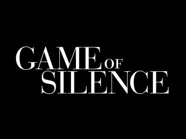
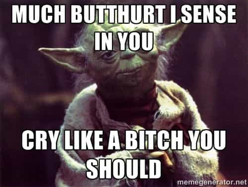

“Openness, as currently conceived, is a way of making surrender to whatever is most powerful, or worship of vulgar success, seem principled.” – Allan Bloom, The Closing of the American Mind.
Everyone is being inundated in our culture with the idea of openness, specifically, the left’s idea of openness. This idea of openness is actually moral relativism masquerading as moral virtue; a moral virtue that changes, based upon convenience and emotion, which is really no morality at all.
Moral Relativism

Moral relativism is pushed as the highest possible moral code. A moral “code” of tolerance above everything else. Moral relativism and the idea of relative moral truth go hand-in-hand. These two cannot be separated. Hence, the phrases, “This is true for me,” and “That is true for you.” Subjective desires, whatever they are, become the “new” moral truth.
Moral relativism teaches the philosophy that all moral truth is subjective (not to be confused with objective truth which is independent of the person and his consciousness, i.e. 5+5=10). Anyone that accepts the idea of tolerance as the highest moral priority really has no moral code. The arguments for universal tolerance, which is based upon no concrete standard, are typically very persuasive.
In his book, The Closing of the American Mind, Allan Bloom states:
There is one thing a professor can be absolutely certain of: almost every student entering the university believes, or says he believes, that truth is relative. If this belief is put to the test, one can count on the students’ reaction: they will be uncomprehending. That anyone should regard the proposition as not self-evident astonishes them, as though he were calling into question 2 + 2 = 4.
Moral relativism has permeated all aspects of the Western world, political, spiritual, religious, and cultural and has made its way into the sciences. Cynthia Crossen in her book, Tainted Truth discusses how information is deliberately manipulated for specific outcomes. What is pushed as objective truth is no longer truly objective.
The death of objective truth leads to the eventual death of all things related to it. Morality, integrity, honor, and all other foundational underpinning of civilization crumble away. Civilizations can be compared to a building, the foundation being the objective truth and moral law of the civilization. Without objective truth and moral law we have no foundation.
Since moral truth is relative, this means that truth becomes unreasonable and cannot be known because moral truth is different for each person. Moral relativity is presented as moral liberty but in reality moral relativity is a type of slavery. Few realize the opposite of war is tyranny and slavery.
As our societal foundation crumbles away, governments construct ever more detailed and morally relative statutory codes in an attempt to provide cohesion to society since foundational laws and traditions are openly disregarded and attacked. This creates a society where virtues are presented as a vices and vices are presented as virtues. To present virtues as vices and vices as virtues requires a corruption of the soul and mind. This is a world where people claim emotional and moral chaos is freedom.
In a world ruled by moral relativity, emotion is substituted for reason, cowardice is taken for bravery, tolerance is substituted for virtue and standards, and weakness is substituted for strength.
Personal restraint and self-respect are being destroyed. Moral relativity operates under the idea that what feels good is good for me and for society. Pleasure and emotional whims decide what is good, and our statutory law and case law come to reflect this idea.
Moral relativism is a disgusting, murky, swamp of narcissistic behavior presented as freedom and a trouble free playground. Moral relativism has resulted in the creation of a various committees, such as the “Safe Space Committee” at Old Dominion University to reduce “homophobia, transphobia and heterosexism” on campus.
The United Methodist Church recently selected a transgender person to be a deacon. Eventually, this same person or another transgender person will be leading a congregation of United Methodists. Any other churches, faiths, or groups that oppose transgender are regarded as bigoted, backwards, and “out of touch”. Transgenderism and the idea of non-binary sexes are examples of moral relativism and the idea of biological sex being a relative truth.
There Is No Moral Neutrality
The purveyors of moral relativism promote the idea of that a person can be morally neutral. This is a make-believe world where no right or wrong and hence no judgement exists for any of the behaviors of other people. This type of thinking is full of hypocrisy. The postulators of moral neutrality are more than happy to push the make-believe world of moral neutrality as long as they feel they have not been wronged by anyone else.
We make judgments every day in life. We are constantly presented with choices and judgments of various natures. When people insist we do not pass judgement upon someone’s moral choices, the people insisting any such judgement have questionable character.
A person believing they are morally neutral believes they are on the moral high ground. Accusing someone else of passing judgment while claiming to be morally neutral is contradictory; the claim of being morally neutral becomes self-refuting because the person accusing another of judgment is passing judgment upon someone who is not claiming moral neutrality. Being silent is not being neutral. Silence is a quiet acceptance of whatever thinking prevails at the time.

Everyone has two places that influence moral decisions. One place is external from sources such as God, government, society, conventionalism and normativism; the other is internal or the self. Understand moral relativism’s center is the self, moral relativism is an extension of narcissism.
Even those that push moral relativism and have no morals pull rationale and their foundation, even though the foundation is extremely shaky, and ideology from external sources to justify internal desires. Moral relativism is practiced by those will little or no character and those without honor. Such people are quick to forsake any kind of standard for what is convenient.
Understand laws enforce some kind of viewpoint. The laws are changing in the Western world to reflect the current moral relativist view. Moral relativism leads to a double standard. Moral relativism is why many feminists are not prosecuted for bearing false witness against the men they accuse of rape or other crimes. Moral relativism is why no parties were prosecuted and nothing was really fixed after the 2008 financial collapse. Moral relativism is one of the reasons why women and children have come to rule over men as spoken of in the Bible.
What needs to be done
The more evil, decrepit, and morally relativist a people become the more they have need of taskmasters telling them what they can and cannot do.
Those in the moral and truth relativism quagmire are without honor and do not honor others let alone themselves. Do not honor such people. Many of these people lack or have poor reasoning abilities. Wisdom necessitates we periodically evaluate what forces and factors influence our decisions, our standards, and what we value.
Do not include in your circles, unless you have no choice, people engaged or that push moral relativism. They will drag you down. When we abandon the idea that laws do not apply to everyone, without exception, all the remains is the subjective personal desires and opinions.
Believe your standards to be true, believe in something other than yourself, and place what you value (what is deemed to be of worth) at the front. Do not be the same as other people by believing the freedom of our time is the liberty to choose any values you desire as long as you don’t believe them to be true. Standing up to moral relativism will have a lot of butt hurt people, but that is their problem.
The purveyors of moral relativism do not need your compliance, all they need is your silence and they will succeed. Since moral relativism is really no morality at all, what society accepts as “moral” will continue the downward march until they drown in the murky swamp of me-ism.
Read More: The Truth About AIDS & Heterosexual Transmission